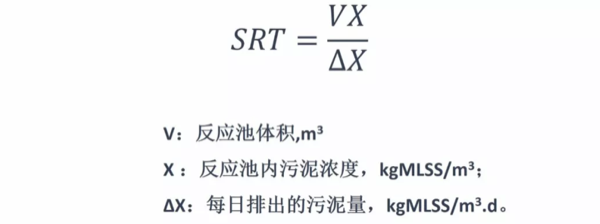
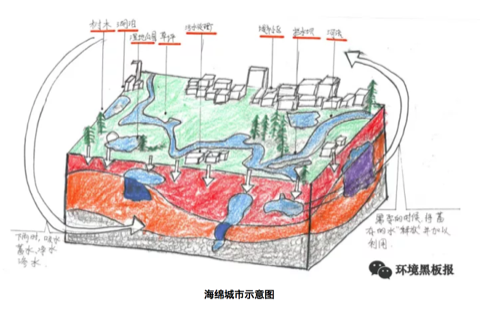
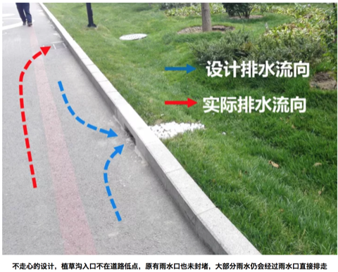
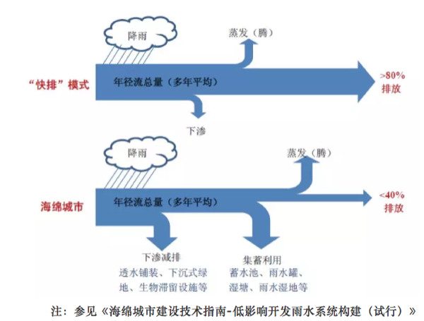
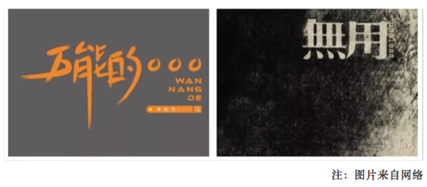
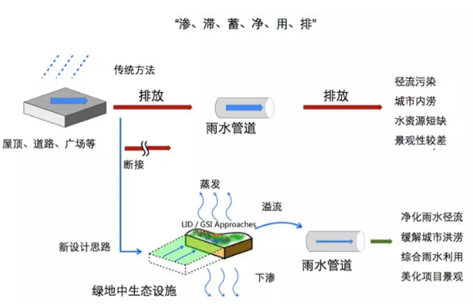
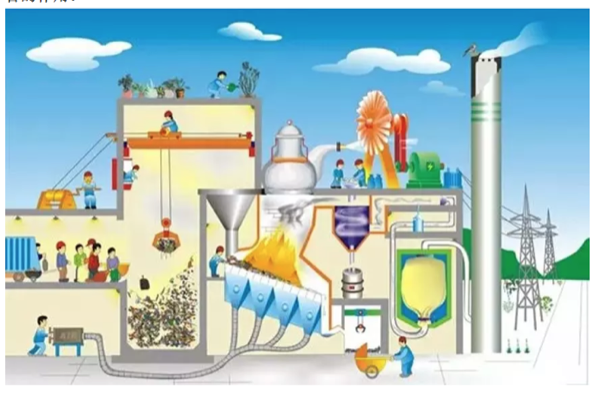
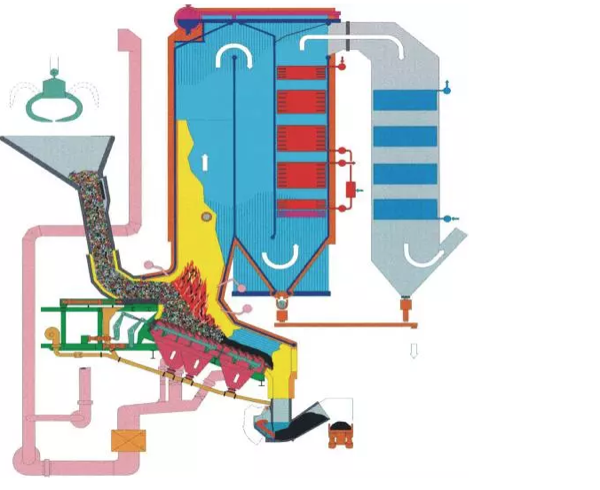
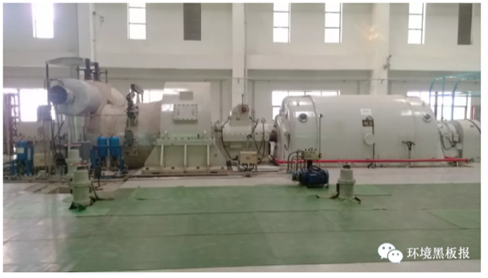

第4章 工程实践
4.1 污师私房菜: OUR 和 SV30 的应用
在污水处理领域，活性污泥工艺可谓无人不知无人不晓。活性污泥吃着排泄物，干着体力活，最终为我们产出清水，真乃当下“撸起袖子”的楷模。说到活性污泥真是让人既爱又恨，爱的是它能帮我们处理污水，恨的是它不善于表达，和人类语言识别系统无法链接，当污水处理系统出问题的时候，初入运维界的你却无法第一时间判断活性污泥究竟为什么罢工，只能求爷爷告奶奶的到处请教大神。

今天通过活性污泥呼吸图谱和污泥沉降性比的应用介绍，通过熟练掌握这两个污水处理厂运维秘籍，让你可以和活性污泥随时交流，对污水处理厂的运行维护清晰把脉，及时准确解决出现的问题，让你的格调得到迅速提升，变身污水处理领域的运维大神。
4.1.1 呼吸速率的前世今生
话说20世纪50-70年代，国外有一群水处理界的大神（Eckenfelder，Mckinny，Lawrence-McCarty）闲着没事东看看西瞅瞅，就弄了个活性污泥模型出来，在里面就提到了呼吸速率（Oxygen Uptake Rate, OUR）的概念。所谓呼吸速率是指单位时间内活性污泥消耗的溶解氧的量。呼吸速率的概念由来已久，关于测量呼吸速率的专利也是层出不穷。然而呼吸速率一直应用于模型理论层面，在实际指导污水厂的运行方面却是凤毛麟角。（如何测量OUR就不在这里赘述了，请大家自行查阅相关秘籍）
我们知道在活性污泥工艺中有两种主导微生物：异养微生物和自养微生物。异养微生物需要消耗外部碳源维持自身生长（不给肉吃，它就死给你看）；而自养微生物就是楷模了，可以通过分解无机物获得能量维持自身生长（真是吃着土，干着活）。这两种微生物都有各自的呼吸速率，异养微生物降解有机物时的呼吸速率称为异养菌呼吸速率；自养微生物降解氨氮时的呼吸速率称为自养菌呼吸速率。有时活性污泥闲着无事也会吃些自己身上的东西，把微生物利用细胞内含物质作为基质进行新陈代谢过程中的呼吸作用称为内源呼吸速率。图谱如下图所示：

4.1.2 OUR应用的理论介绍
上面介绍了呼吸图谱的组成，下面来谈一谈呼吸图谱的作用。为了更清楚的起到对比，我们需要在污水处理厂正常运行时，刻苦用心的你日常闲来无事多测测好氧池OUR，建立一个污水处理厂的OUR数据库，对正常情况下的OUR烂熟于心，只有这样你才能了解你自己一亩三分地的情况。
通常，活性污泥OUR值的大小及其变化趋势可对好氧池负荷的变化情况起到预警作用，同时OUR的变化也间接反映出活性污泥自身的健康情况。我们分两类情况进行分析：
4.1.2.1 OUR异常高于正常值的情况
如果OUR若大大高于正常值，表示活性污泥需要消耗大量的溶解氧，表明优秀的活性污泥小伙子们正在撸起袖子加油干，这也往往预示着污泥负荷过高，可能超过污水处理厂的处理能力，这时出水水质可能超标。
你可以脑补一下这个场景：一个房间里面有十个饥饿的小伙子，你拿来十个馒头，他们能以迅雷不及掩耳盗铃响叮当之势把这十个馒头干掉，可如果你拿来一千个馒头，就算是吃到怀疑人生也吃不完。
4.1.2.2 OUR异常低于正常值的情况
如果OUR长期低于正常值，表示活性污泥消耗的溶解氧较少。这就需要分两种情况来分析了，一种情况是活性污泥精神抖擞，战斗力强，污染物负荷较小，污染物降解好，出水水质好；另外一种情况就是污泥活性差，污泥本身对污染物的降解性能不良，这可导致出水水质不达标。
第一种场景是这样的：一个房间里面有十个饥饿的小伙子，你就给五个馒头，估计最后盘子都会被吃掉；
第二种情况是这样的：同样是这个房间，同样是五个馒头，但是吃馒头的人变成了十个胃口欠佳的病人，结果可想而知。
4.1.3 OUR应用的实战演练
上面对OUR应用的理论介绍还是比较笼统的，下面详细讲解一下如何利用OUR来判断出水水质，针对OUR的应用进行实战演练。
4.1.3.1 实战场景1
用心的你费了九牛二虎之力测定了好氧池的OUR，发现OUR值比较低，根据理论分析，你记住了OUR异常低于正常值的第一种分析情况，认为活性污泥小伙子们战斗力强，降解能力个顶个，赶紧跟领导汇报说出水达标没有问题。你刚汇报完，厂里就通知你出水超标了，这脸被打的啪啪响。
这时,你一定会问，OUR值低，说明出水水质好，怎么出水还超标了呢。少年不要急，听我慢慢说来。
在OUR值比较低的情况下出水超标，说明此时的活性污泥并没有正常工作，那该如何解决呢？这种情况下你只需要往装置内部补充足够的碳源，最常见的是投加乙酸钠，看看投加碳源后的OUR值变化，如果OUR值还是很低，说明你的活性污泥活性差，大多都是老弱病残，再怎么给他们喂食碳源也不能发挥他们的作用；如果OUR值在投加碳源后明显升高，说明你的活性污泥是健康的，他们只不过是饿了，需要饱食一顿接着好好干活。
因此，在好氧池OUR值比较低的情况下，判断出水是否达标的时候，需要结合好氧池当下的OUR和投加完碳源后的OUR进行判断，才能准确对污水处理厂的运行状态进行评价。
4.1.3.2 实战场景2
勤快的你这天又测定了好氧池OUR，发现OUR值很高，结合OUR异常高于正常值的情况分析，你下结论说出水水质达标。
少年你又要被打脸了。
好氧池当下OUR值高，说明好氧池中污染物负荷高，表明好氧池需要消耗大量的溶解氧，为了保证出水达标，你需要做一系列应对措施，比如增加曝气，减少排泥量等等，只有这样才能保证你的出水达标。
4.1.3.3 实战场景3
就是这么巧，你们公司属于水处理界佼佼者，你一亩三分地里面管辖着若干个污水处理厂，你也坚持着建立了各个污水处理厂OUR的数据库，你也是一个闲着无聊喜欢翻数据的人。有一天，你发现针对不同污水处理厂，即使在进水和出水水质相差不大的情况下，好氧池的OUR差别仍然很大，这时你又迷茫了。
不要迷茫少年，因为在测量OUR时并没有考虑污泥浓度的因素，污泥浓度高的，表明污泥中活性微生物较多，OUR值较高，污泥浓度低的，表明活性微生物少，OUR自然就低一些。你可以想象一下，10个人和100个人的体重还是有很大差别的。
那如何采用一个统一的评价指标来评价呢？我们在污水处理厂的运营维护过程中，善于发现问题的同时，还要善于解决问题。这时，我们引入一个叫比呼吸速率（OUR/MLSS）的评价指标，你就会发现在入水水质和出水水质相差不大时，各个水厂的比呼吸速率相差也不是很大，是不是完美的解决了你的困惑呢？
4.1.4 SV30的应用实战
上面给大家讲了比较高大上的OUR，接下来再给大家讲讲污泥沉降比的实战应用。SV30，在污水处理界的地位，犹如《天龙八部》中的扫地僧。可谓是量筒在手，天下我有。
做过污水处理的人应该都知道，污泥30min沉降性能，可以一定程度上说明污泥的性状，所谓画虎画皮难画骨，具体判断污泥处在哪个状态却不是一件容易的事。可能或许也许maybe只有真正达到扫地僧的级别才能通过SV30一眼识别出污泥的性状来。
少年也不必灰心，鄙人在藏经阁翻阅典籍无数，浏览宝典若干，给大家总结了一些关于SV30的要点。大家理论联系实际，在测试SV30的时候，通过实际观察并结合我提供给大家的要点，相信大家早晚能达到扫地僧的级别。

这里告诉大家一个小诀窍，千万别告诉其他人。
在测试SV30的过程中，重点观察前5min的沉降效果，活性污泥沉降实验的前5min往往可以完成沉降过程的80%，此阶段的沉降效果好坏往往可以指导对活性污泥性能的判断。
你可千万别取完样定个时间，先睡他半小时。所谓武功再高也怕菜刀，在测SV30的时候量筒的选择很重要，建议大家选用1L的量筒，量筒过小可能会发生污泥挂壁现象影响效果。再次重申，这些小诀窍千万别告诉其他人哟。
4.1.5 结语
以上算是给大家介绍了关于污水处理的两个秘籍，
一个是修炼较困难的葵花宝典——OUR，
一个是老少皆宜的太极拳——SV30。
所谓难易结合才能事半功倍。当然，掌握了以上两个技能也不能洋洋自得，天下之大，无奇不有，只有不断充实自我，才能屹立在污水处理行业的尖端。

作为一个21世纪的污水厂操作人员，作为一个生活在大数据、物联网、云计算时代的污水厂操作人员，作为一个人工智能正在逐渐取代你饭碗的污水操作人员，仅仅依靠设计规范上面的知识已经难以追上时代的列车了。只有与时俱进，汲取新知识，用知识的力量将命运牢牢把握在自己手里。
成神的道路注定是孤寂乏味的，成神的道路注定是披荆斩棘的，成神的道路注定是一往无前的。少年，抓住当下，紧跟大师步伐，成神指日可待。
作者：阿布呆 校稿：看透， yufree 编辑：智公子 美图：丫头晚安，智公子
4.2 污师私房菜系列二:SRT的应用
4.2.1 引言
相信在理工科子民们数百万脑细胞中存储着这句话的只言片语，“在化学反应前后,参加反应的各物质的质量总和等于反应后生成的各物质的质量总和。”（如果没有，可能当初你的化学是语文老师教的）。看到这句话的瞬间，大家会嘴角上扬，自信的微微一笑“质量守恒定律嘛！！”恭喜你答对了。这时看过污师私房菜系列一的食客（没看过的客官，课后请自行补上），一定会疑问这个污水处理怎么扯到质量守恒定律了呢？客官莫要急，听我慢慢说来。
我们知道人作为一个有机体，每天通过摄入食物（想要远离油腻的同学需要注意控制摄入量）来维持机体正常运转，同时我们还需要排出一些物体（毕竟我们离神兽貔貅还差好几条长安街的距离）来保持机体的健康。污水处理厂运转机制跟人身体的运转机制相差不大。污水处理厂每天也需要摄入食物（COD、氨氮等污染物）为维持活性污泥的正常生长，同时污水处理厂每天也需要排出一部分污泥来保持水厂的健康运行。今天通过对SRT的介绍，让你轻松搞定污水厂的排泄问题。
4.2.2 SRT的含义
SRT （solids retention time）英文翻译叫固体停留时间，业界称为污泥龄。其定义为：微生物从其生成到排出系统的平均停留时间，也就是反应系统内的微生物全部更新一次所需的时间，单位是天。

微生物从呱呱坠地，到撸起袖子干活也是需要时间的，菌到中年虽然有些油腻，但是战斗力还是不容忽视的，你不等微生物成熟就排出了系统，会损失战斗力。在污水处理系统中有两类主导微生物：异养微生物和自养微生物。异养微生物从小吃香喝辣，小身体长很快就过渡到油腻的中年；而自养微生物从小自力更生，相比异养微生物，小身体长的比较慢，异养菌都繁衍好几代了，这边可能刚刚成家立业。于是乎就出现了社会矛盾，异养菌抱怨社会老龄化严重，需要排出部分老龄群体；而自养菌抱怨婴儿太多，能干活的少，希望可以给他们更多的时间去成长。如果不解决异养菌的问题，这些家伙就会自我解体，让你出水SS变高，COD也变高；同样，如果不解决自养菌的问题，这些家伙就会降低劳动强度，让你出水氨氮超标。因此，为了社会和谐，你这个污水厂主管就得玩的溜SRT，让双方都满意，让双方干劲十足。
4.2.3 SRT的应用
下面给大家分析一下不同SRT对出水污染物浓度的影响。利用某污水处理仿真软件，设定入水COD=300mg/L，氨氮=30mg/L，TP=3mg/L，工艺为 \(A^2O\)，好氧池溶解氧设定为2mg/L。根据调整排泥量得到不同的SRT。从图上可以看到随着SRT增加，出水COD、TP和SS增高，氨氮下降。SRT增长，异养菌老龄化就严重，过多的老龄化异养菌解体导致出水COD和SS增高。生物除磷主要通过厌氧释磷和好氧吸磷实现，关键在于剩余污泥的排放，你不排泥就是给自己找事情，磷当然会升高。相反，随着SRT的增长，自养微生物群落越来越健壮，一群油腻大叔干起活来也是基情满满。

从SRT的计算公式可以看出，SRT长意味着系统中污泥浓度高，这个时候你好氧池的需氧量也是增高的，需氧量增高就意味着你需要供给更多的空气花更多的钱。这年头，钱进了腰包，谁也不愿意在让它出去，所以还是狠狠心多排排泥吧。在平均气温20℃左右的时候，将SRT控制在15d左右就足够了，当然如果你是一个负责人的运营人员，可以在此基础上不断进行调整，找到一个适合自己水厂的最佳SRT。
细心的客官可能发现我上面说到“在平均气温20℃左右的时候，将SRT控制在15d左右”（如果没发现说明你在搞事情哟）。不错对于严谨的我，是不会让你挑出任何毛病的。不同温度对SRT的要求是不同的，不信你看：好吧，我承认自己打脸了，对于吃香喝辣的异养微生物管你温度多少，只要有吃的就好。看来身体好，才是真的好。从图中可以看出，不同水温下，相同的SRT下出水COD基本没有变化；同样SRT增长，出水COD呈现增高趋势。任你温度变化，我自岿然不动，该解体还是要解体。

异养微生物这货不给我面子，自养微生物还是很给面子的，不同温度对SRT的要求是不同的，不信你看：哈哈，看到了吧，不同温度下，相同SRT下，出水氨氮相差很大。同样的14.2d的停留时间，20℃时出水氨氮可以达到0.9mg/L，而12℃时高达9.64mg/L（少年要注意了，此时你已经超标，环保执法人员已经上路）。对于身体羸弱的自养菌，大冬天不给增加点人手，干起活来没基情呀。虽然有社会矛盾，但是我们要抓住主要矛盾才行，因此，在冬季水温较低的情况下，我们要适当增加SRT，保证自养微生物的处理效果。

4.2.4 剩余污泥的控制
目前，控制剩余污泥排放量的常用方法有三种：污泥浓度（MLSS）控制、污泥负荷控制和SRT控制。因为污泥负荷、SRT与出水水质直接相关，用MLSS控制排泥对系统运行意义不大。实际运行中多采用二沉池排泥，这样可以减少污泥排放体积，节约费用。虽说MLSS控制排泥对系统运行意义不大，将MLSS与SRT充分结合起来可以更加方便对排泥的控制。对于那些兢兢业业工作的人员，领导安排说每天排泥半小时，真是风雨无阻坚持每天排泥半小时，结果运行了一段时间污水厂宕机了。这位员工也是很懵逼的，我也是按照指令操作，怎么就挂了呢？大兄弟不要桑心，我给你讲个故事听听：
话说有个农夫养了一只母鸡，农户好吃好喝的伺候着母鸡，母鸡也很给力的给农夫下了一堆鸡蛋，就这么着农夫的小篮子里面积攒了10个鸡蛋，然后母鸡每天都会给农夫下一个鸡蛋。农夫每天吃一个鸡蛋，母鸡每天也给他下一个鸡蛋。最近母鸡的伙食质量下降，母鸡下蛋激情受到了打击，2天才下一个鸡蛋，可农夫生活规律还是坚持一天吃一个，就这样吃着吃着发现没有鸡蛋可以吃了。农夫发现自己吃的太多了，就好几天没有吃，又重新积攒了10个鸡蛋。这次农夫改成2天吃一个鸡蛋，母鸡还是每天下一个蛋。就这样过了一段时间农夫积攒了好多鸡蛋，发现有些鸡蛋过了保质期坏掉了。
大兄弟这下明白了吧，领导让你干这件事，你按照命令执行没有问题，关键是你要考虑一下微生物们的感受，人家都入不敷出了，你还坚持往外排，不宕机都怪了。当然你也别走到另外一个极端，你不排泥，领导会拍你的。
4.2.5 结语
私房菜一里面介绍葵花宝典：OUR和太极：SV30。今天的SRT可以比作易筋经，习得该神功可以让你从一个无名小辈变成一个江湖数一数二的高手。俗话说，功夫再高也怕菜刀，SRT对应的菜刀就是自己建立的SRT数据库。练武讲究，冬练三九，夏练三伏，SRT数据库的建立也是一个道理。要坚持针对不同季节，不同来水负荷建立相应的SRT数据库，丰富自己的武器库。污水处理界没有对与错，只有适用与否。同样污水处理界的秘籍都是有着千丝万缕的联系，将一本秘籍练到炉火纯青的地步，也就可以窥探到其他秘籍的一二了。
作者：阿布呆 校稿：yufree、大石 编辑：智公子
4.3 城市之殇
4.3.1 序言
2012年7月21日，一场61年一遇的大暴雨让北京成为“汪洋水城”，想不到有生之年居然可以在帝都这个缺水的城市同时实现了“山盟海誓”。无独有偶，不仅北京遭遇了这样的窘境与困惑，其他城市诸如南京、武汉、广州、杭州等也先后开启了“看海模式”，这种“城市之殇”已经成为近年来城市发展挥之不去的阴影。

那么，为什么我们城市的排水能力一遇到暴雨甚至中小雨就原形毕露？这就有必要来聊一聊本期的话题：“海绵体”。海绵体，顾名思义，是一种对蓄水的形容，自然界原本是一个巨大的海绵体，而如今城市的爆发式发展建设已严重破坏了自然的海绵体，损害了自然的水循环系统。传统的城市建设模式根本不具备应对超标雨水的能力，那么必然会导致“逢雨必涝”，同时还会带来水环境污染、水资源紧缺、水安全缺乏保障等问题。
2013年12月12日，习近平总书记在《中央城镇化工作会议》的讲话中强调：“提升城市排水系统时要优先考虑把有限的雨水留下来，优先考虑更多利用自然力量排水，建设自然存积、自然渗透、自然净化的海绵城市”。海绵城市顺应时代号召应“运”而生。
4.3.2 海绵城市是什么
海绵城市的理念其实在我国古代早已践行，比如故宫的排水系统、云南的“哈尼梯田”模式、赣州的“福寿沟”蓄排系统等，都算作是早前的雏形。若要刨根求底地问海绵城市是什么，海绵城市更多的是一种新型的城市发展模式。

海绵城市的初衷是让城市能够像海绵一样，在适应环境变化和应对自然灾害等方面具有良好的“弹性”。简单来说，下雨的时候，城市可以像海绵一样吸水、蓄水、渗水，防止洪涝的出现；在雨水过后，干旱的时候，又可以将蓄存的水“释放”并加以利用。但同时，我们又希望这个“海绵”能发挥更大的作用，比如说还可以净化水体，让雨水在城市存积、渗透的同时得到净化，以利于进一步的雨水资源利用和生态环境保护。这就为海绵城市的设计、建设提出了更高的要求，不单是依靠恢复或构建自然途径来蓄水、存水，还应当结合人工措施来辅以完成水资源的净化、利用和排放。

因此海绵城市的具体建设既不能“窄”，也不能“宽”。太窄就会回到植树造林搞绿化的老路子上去；太宽就会变成“海绵城市一个框，啥都可以往里装”。其实海绵城市建设还是要以目标与问题为导向，运用“源头、中途、末端”的措施，使绿色设施与灰色措施相结合，才能实现真正的目标。
简明地讲，源头主要以低影响开发设施（LID）为主，包括植草沟、雨水花园、生物滞留设施等，中途主要包括：雨水廊道、管网、沟渠等，末端主要包括：湿地、调蓄塘、调蓄池、水系等。

4.3.3 海绵城市试点
海绵城市的建设借助国家重视生态环境的东风，目前共执行了2个批次、30个城市的试点，试点期3年。期内国家将给予直辖市每年6亿专项补助，省会城市每年5亿，其他城市每年4亿元。


目前来看，海绵城市建设还没有一个全国性的“统一标准”，主要是因为我国地域差异大，东西南北中，面临的问题与挑战各不相同。比如北方地区多为缺水的寒带地区，南方地区则更容易发生内涝，西部地区多属于湿陷性黄土地区，也极度缺水。因此不同区域的海绵城市建设也应因地制宜。
4.3.4 浅谈海绵感悟
笔者从2015年开始从事海绵城市建设方面的工作，先后参与了多地的海绵城市试点建设的咨询、设计等工作，主要涉及海绵城市建设系统方案编制等方面。这里跟大家分享一下三年多来笔者对海绵城市建设的一些想法与感悟，希望能对现在或将来参与到海绵城市建设中的同仁们有所帮助。
4.3.4.1 从管理部门的角度
如果您是一位相关部门的负责人，笔者虽人微言轻，但也愿意提供一些思考供您参考。 海绵城市的建设是一个很复杂、庞大、时间跨度也大的系统工程。而且里面涉及到很多学科和部门，简单数数就需要规划、市政、园林、水利、道路等专业；住建、水利、园林、环保等部门来互相配合。因此如何统筹规划，通力协作，避免形成各自为政、“九龙治水”的局面，是一门很深的学问。
同时，很多城市现在都有新、老城区，新城区建设制约少、阻力小，一旦方案设计得当，大可一马平川。但是老城区就不一样了，不仅居民多、遗留矛盾和问题多多，牵一发而动全身，搞不好容易激化矛盾。这个时候，就不能只顾海绵城市建设的目标，还要考虑经济承受能力、轻重缓急、资金利用效率、建设时序、社会影响等方面。 千万、千万不能不分轻重地全面开工建设和盲目翻挖。最好可以以解决城市内涝、雨水利用、黑臭治理为突破口，结合棚户区和城乡危房改造、老旧小区有机更新等工作同步推进。
4.3.4.2 从项目公司负责人的角度
当前海绵城市的建设基本上都以项目打包的形式交由PPP公司全权负责建设。如果您是一位项目公司的负责人，首先恭喜您拿下了海绵城市的项目，但是接着愁人的事情来了。在很多项目管理过程中，一些PPP公司“当家不做主”，没有自主权，项目的管控不是由PPP公司独立操作，而会受到相关部门的干预，导致指挥不合理的局面。因此，如果您能在项目开展前和相关部门做好充分的沟通，对您后续工作的开展会有很大帮助。 同时，虽然目前海绵城市都处在建设之中，但是即使这样，试点期也已经过了2-3年，后期的运营维护也该做一些考虑了。如果您公司还没有做这方面的准备，那可千万要小心了，现在环境追责可是很严重的哦。
4.3.4.3 从设计师的角度
如果您是一名规划师或者设计师，请一定要“迈开腿，管好嘴”。一定要多去现场，没有调查就没有发言权，不能板凳一坐就站不起身，嘴皮一碰就出方案。曾经有一位设计院的设计师理直气壮地反驳说没必要去现场看这么细，走了个过场回来，后来设计的时候全部依靠业主来提供信息作为依据。结果可想而知，做出来的设计方案根本经不起推敲，漏洞百出，更别说拿去指导施工建设。

同时也提醒大家，海绵城市建设不只是“搞种植、搞绿化”。“花花草草”固然重要，但我们也不能天天搞“拈花惹草”的老一套。海绵城市的实质应该是绿色设施（雨水花园，植草沟，下凹式绿地等）与灰色设施（管网，泵站，调蓄池等）相结合，让它们在不同时间与空间上起到相应的功能与作用。
4.3.5 结语
海绵城市的概念一经提出，就在全国迅速地铺展开来。国内新事物的出现，不像国外“自下而上”的推进模式，而是“自上而下”的运动式推动。然而，没有前期多年的研究数据作为支撑，直接开展工程实践难免会面临各种各样的困境。 目前，“海绵城市”的提法基本已家喻户晓，无人不谈“海绵”；然而能真正潜下心来认真对海绵城市进行系统的研究与梳理的人却少之又少。一个新的领域，往往需要十年甚至更长的时间来形成系统性的理论与技术体系，之后才有可能更高效、更全面指导工程实践。希望各位海绵同仁，我们一起潜心努力，为这个领域尽自己的绵薄之力。
作者：王宇 校稿：广播站王站长 编辑：栟 手绘美图：丫头晚安
4.4 浪潮下的海绵城市
简介：海绵城市已在全国范围内掀起建设的大热潮。但各城市在推进海绵城市建设过程中，仍然面临着很多的疑惑、困扰和问题，随之直接影响到城市的建设效果、推进效率及试点经验总结。
4.4.1 海绵城市建设热潮
随着我国城镇化的快速发展，现有传统的排水模式已经不能满足当前的城市基础设施发展需求，并对水环境造成严重的影响与危害。近年来，城市水体黑臭、洪涝灾害等“城市病”越发受到关注。城市当前严重的面源污染、原有良性水文循环的破坏、健康水体生态环境的日益恶化等状况与国家生态文明建设的要求、新时代城市发展的建设要求、城市生态环境质量改善需求、人民群众满意感获得严重不符。
近年来，国家层面已高度重视城市发展过程中的雨洪管理问题，尤其是在2014年10月，发布了《海绵城市建设技术指南——低影响开发雨水系统构建（试行）》，同年12月，住建部、水利部、财政部三部委联合发布海绵城市试点申报通知，2015年3月，确定南宁、武汉等16个城市作为首批海绵城市试点。2016年4月，确定北京、上海等14个城市作为第二批海绵城市试点。要求每个试点城市3年内完成不小于15km2的示范区建设，目前的情况是，第一批试点建设期基本完毕，第二批处于试点建设期末。
2015年10月，国务院发布《关于推进海绵城市建设的指导意见》，要求到2020年城市建成区20%以上的面积达到目标要求；到2030年，城市建成区80%以上的面积达到目标要求。目前，全国范围内海绵城市建设的工作正如火如荼。

然而，在实际的操作与落实过程中，面临很多的难题与困难，主要包括观念的转变、理论与技术体系的建立、规范与标准的制定、管理模式创新、不同专业的协同合作、政策与资金保障、监测模拟评估等方面。从国内对海绵城市建设理念的普遍理解、知识技术体系的建立、实际工程经验的积累及管理机制体制建设等方面来看，要在短短几年内大规模地推动海绵城市建设，肯定会面临艰巨的挑战。
所以说，在当前政府大力支持、大量资金投入建设的背景下，仍然需要理性思考海绵城市的建设，只有全面地、系统地、完整地梳理海绵城市建设，才能高效有序地推进海绵城市建设，避免出现“一股风”、“一阵热”的现象。
4.4.2 海绵城市建设疑惑与困难
4.4.2.1 海绵城市内涵认识不清
目前，从很多试点城市的实施方案、三年实施计划、设计方案、落地工程项目等情况来看，对海绵城市的内涵与外延、年径流总量控制率、径流总量、径流峰值、径流污染控制等概念定义认识不清。
国务院办公厅《关于推进海绵城市建设的指导意见》明确指出：“海绵城市是指通过加强城市规划建设管理，充分发挥建筑、道路和绿地、水系等生态系统对雨水的吸纳、蓄渗和缓释作用，有效控制雨水径流，实现自然积存、自然渗透、自然净化的城市发展方式。”海绵城市是新时代城市转型的新理念新方式，不是某一个具体工程，不存在什么海绵项目或海绵工程的说法，应该是落实海绵城市理念的工程，所以说没有海绵城市工程，只有落实海绵城市理念的工程。
而且，海绵城市不等同于国外提倡的低影响开发（Low Impact Development），更不等同于透水砖、蓄水池等。海绵城市是为了解决实际问题产生，而不是为了增加项目与工程。

狭义上的低影响开发措施的功能和适用范围被过分夸大。一方面，有人认为海绵城市是一个框，啥都可以往里装，错误理解低影响开发是万能的，完全否定灰色基础设施，当前城市区域条件错综复杂，高效、可持续的解决方案基本无法仅仅依赖单一的绿色或者灰色的基础设施，若一味追求绿色雨水基础设施，往往会增加施工难度，造成投资浪费，无法解决实际问题。另一方面，有些人认为海绵城市是无用的，这种完全依赖灰色基础设施已经暴露很多现实问题，不符合海绵城市建设理念。

4.4.2.2 对控制目标、指标理解片面化
当前很多人对海绵城市的目标理解片面化，有人认为海绵城市建设是内涝治理，有人认为海绵城市就是黑臭水体治理，有人认为既没有内涝也没有黑臭水体的城市不需要海绵城市……海绵城市建设的六字箴言“渗、滞、蓄、净、用、排”，准确表达了海绵城市建设的多目标、多方向、多途径，其核心目标为径流总量、径流峰值、径流污染、资源回用，终极目标为：修复城市水生态、改善城市水环境、保障城市水安全、提高城市水资源承载能力

其次，对年径流总量控制率的理解不准，这个概念是降雨控制率，不是径流控制率，是一个水质控制标准，是海绵城市重要的指标，但不是唯一指标。目前从一些试点城市实施过程来看看，存在不结合实际情况，强行分配控制率指标，造成项目实施起来缺乏合理性，甚至有些方案编制单位将六字箴言割裂开来，分别进行项目分配，这样造成严重的后果，明显就是不了解各个低影响开发设施具有多功能性，而且某一个项目肯定是有多个子设施构成。所以说，在实际工作中，要根据不同条件，根据不同措施的特征、适用性进行优化组合，选择最优组合。
4.4.2.3 海绵城市建设艰难性认识不足
试点城市申报成功后，往往涉及到众多的实施项目，一方面，时间短，仅仅剩下不到三年的时间，完成几十甚至上百个项目，难度可想而知；另一方面，示范区域一般都包括老城区和新城区，对于老城区，绿地率很低，绿色空间不足，而且还面临着协调、黑臭水体、内涝积水点整治等问题，对于新城区，绿地率相对较高，空间较大，主要面临着居民反对与抵触，甚至不断投诉等，所以说数百个的改造、新建项目同时规划设计、同时施工任务相当艰巨。
总体的来说，不管旧城还是新城的海绵城市建设，均不同程度地面临这样或者那样的问题，面对这些问题，只有科学合理制定实施方案、实施计划、多方紧密协同配合等才能更高效、有序地推进海绵城市建设。
4.4.2.4 监测平台与模型模拟用途不清
随着海绵城市建设工作推进，各个城市至少试点城市都要建立海绵城市监测平台及构建模型，一夜之间相关监测设备“风生水起”，疯狂之后冷静思考，不能为监测而监测，平台构建的监测部分不是买设备，而是买数据服务。正确的是，首先要非常明确海绵城市建设监测的目的，这样搭建的平台与模型才更有意义，总结下来，监测目的主要有以下四个方面：（1）后续长期运营效果评估；（2）用与相关海绵设施（绿色设施）的科学追踪研究；（3）用于政府管理调度，通过不断调整优化模型，用来实施反馈；（4）用于未来城市规划管理。

其次，监测平台建设是个比较复杂的系统工程，不求开始尽善尽美，但求不断完善，不可能一蹴而就，需要分布实施：第一步是监测，梳理清楚基本参数，展示出效果；第二步是整合监测、模型等；第三步，是结合相关城市的海绵城市专项规划、系统化方案与运营管理，真正能用于辅助方案的制定和后续的审批管理，做到多规合一、提高审批效率。
4.4.2.5 后期运营维护准备不充分
当前，在海绵城市建设过程中，国家也正在积极倡导与支持鼓励按照PPP（Private-Public-Partnership）模式进行操作，PPP模式主要由当地政府与企业共同参与投资建设、运行管理。海绵城市建设的PPP模式不应该企业或政府简单的融资渠道，更不应成为地方政府转嫁财政负担的途径，政府本身就有很强的融资能力，PPP模式是应以提高效率为初衷。
试点期已经过2~3年，后期运营维护是当前项目公司面临很棘手的问题，部分PPP公司甚至根本没有做好思想准备，有些根本不知道怎么去运营维护，项目一旦建设完工通过验收后，后期的管理基本上无人问津。
PPP公司需认识到不是建设完就拍屁股走人，还有很长时间的运营维护期。只有做好了以下三点，才算是一个好的PPP项目：第一，全生命周期，从设计、建设、运维的全生命周期，PPP合同至少15年以上必须要运营期；第二，让专业的人来干专业的事，政府是破解政策上的风险，做协调性的工作，政府不能压给社会资本，也不能社会资本什么都不管，都抛给政府，只想挣钱；第三，政府花钱是买效果，绝对不是买工程，一定落实绩效考核、按效付费。若PPP做不到以上，那就是变相的BT模式（“建设–移交”），有些PPP公司在建设上把99%的钱都赚走，只剩下1%的钱去做后期的运维，很容易造成后期服务不到位或效果没保障，那就失去PPP模式的“初心”。所以说，PPP项目应该是全生命周期的，让专业人干专业的事，政府花钱买效果，按效付费。
4.4.3 海绵城市建设展望
“不忘初心，方得始终”。海绵城市试点建设取得成功的关键在于是否实现了建设海绵城市的初心。找到海绵城市建设的初心，就是明确海绵城市建设的目的。海绵城市建设是城市发展方式的重要理念转变，是系统解决城市水问题的重要抓手，是要求改善城市生态环境质量、提升城市综合抗灾减灾能力、扩大优质生态产品的供给，让人民群众不断有获得感、幸福感。
从长期来看，我国城市的传统建设模式必然向海绵城市建设的模式转变。无论是工程界、学术界还是管理者都已经清晰认识到原有的粗放型的城市雨水排放模式问题百出。这一转变绝非一蹴而就，是一个长期而艰巨的系统工程。
海绵城市建设是今后城市理性、健康发展必须长期坚持的生态发展理念，在建设过程中要找准方向，精准施策，通过试点先行，保持久久为功。
作者：宇哥 校稿：广播站王站长，柴胡半夏苏 编辑：竹而乐
4.5 垃圾焚烧发电该怎么烧
垃圾焚烧发电是一项变废为宝的工艺，今天就让我们来看一看垃圾焚烧发电厂是如何工作的。
4.5.1 概述
为了让大家能直观地了解垃圾焚烧发电厂的工艺流程，我借了以下图片（来源于光大环保下属某垃圾焚烧发电厂的宣传卡通画）。虽然不同焚烧厂的规模、基本布置或工艺流程会有些许的差别，但个人认为差别不大，这幅卡通画完全能胜任科普的作用。

生活垃圾焚烧发电的主要原理是以生活垃圾作为燃料，放入锅炉中燃烧，将其产生的过热蒸汽输入汽轮机，实现由热能转化为电能的过程。整个工艺流程主要由垃圾接收输送系统、垃圾焚烧炉系统、余热回收系统、汽轮发电机及热力系统、烟气净化系统、灰渣处理系统、垃圾渗滤液处理系统等组成，因此，下面我们依照次此顺序向大家介绍垃圾焚烧发电工艺流程。
4.5.2 前端接收——垃圾接收输送系统
垃圾车由厂区的物流门进厂，经地磅称重后，车辆依照指示驶入垃圾卸料大厅，将垃圾倾倒入垃圾储坑。汽车通过后车斗将几吨至二十几吨不等的垃圾卸进垃圾储坑，按照要求垃圾储坑内的垃圾会停留7-10天，经发酵脱水后热值显著提升，可满足垃圾炉的焚烧要求。

垃圾焚烧发电过程中，臭味气体的逸散对周围环境和操作工人的身体健康造成一定的影响，所以垃圾焚烧发电过程的防臭是一个困扰运营人员的难题。通常，工作人员会在垃圾储坑上部安装一次风机，垃圾储坑内的空气被一次风机抽至焚烧炉，使得臭气也进入炉中得以焚烧，转化成无臭气体，以控制臭味和甲烷气的积聚。另外，通过抽气等手段，使垃圾储坑保持负压，防止坑内的臭气外溢。

4.5.3 中端处理——垃圾焚烧系统
- 焚烧炉
目前国内外基本采用往复式炉排炉垃圾焚烧技术，垃圾抓斗将仓内垃圾提升到给料斗，通过给料槽连续不断加料到炉排入口。在推料器的作用下，垃圾首先进入排炉干燥区，通过炉排的动作，垃圾在炉排上往前移动到燃烧区，最后到达燃烬区，确保垃圾在850℃~1100℃高温下得到充分燃烧。
国内设计院会根据当地处理垃圾的热值，水分，成份等基础数据，选择合适的炉排形式进行选型。下面几张图片是垃圾炉排的一个基本的示意图（其中上面两张是炉排正在安装，下面两张则是安装完毕待运行的状态）。

- 余热回收系统
焚烧炉的上部即为锅炉，焚烧炉出来的烟气温度约为850℃，首先被焚烧炉上部第一通道的水冷壁管吸收部分热量，然后烟气继续冲刷屏式受热面及过热器，烟气中大部分的热量在这里被吸收，最后经过省煤器时将剩余的热量再吸收一部分，尾气排至烟气净化系统（下图表示出烟气在锅炉内的流动，所经过的地方都是有换热管屏的，在右侧尾部的出口就接至烟气净化系统）。

在烟气流动的同时，汽水也在流动，一般来说汽与水的流动和烟气的流动是逆向的，方便换热。一般来说，锅炉给水经除氧器由给水泵输送，经省煤器预热后送至锅筒，然后经水冷壁和屏式受热面进一步加热，产生出汽水混合物进入锅筒。饱和蒸汽在锅筒内被分离出来，经过过热器进一步加热，最后产生出过热蒸汽，送往汽轮机。
- 汽轮发电机及热力系统
焚烧炉产生的热能通过余热锅炉产生蒸汽，再经凝汽式汽轮发电机组转化成电能。汽轮机的原理就类似于卡通图中的水壶喷出的蒸汽吹动叶片，叶片切割磁感力线就会有电能产生，再由升压站送至大电网中供千家万户使用。

余热锅炉提供的过热蒸汽进入汽轮机做功驱动发电机发电后，蒸汽进入凝汽器冷凝为凝结水，由凝结水泵将凝结水加压后经两级抽汽器、汽封加热器、低压加热器和除氧器，除氧后由锅炉给水泵返回余热锅炉。低压加热器和除氧器所用蒸汽在汽机运行时由汽机抽汽供给（这部分的内容就稍微不太好理解了，我就不加详述了，毕竟涉及的热能对象太多，没有设计或运营经验的人很容易把东西搞混）。
4.5.4 后端处理——环保系统
- 烟气净化系统
烟气净化系统主要有：炉内脱硝系统、半干式综合反应塔、活性炭吸附系统、布袋除尘器系统、烟气排放系统、烟气在线监测系统和飞灰输送系统等组成。
炉内脱硝系统多采用选择性非催化还原法（SNCR）的工艺，该工艺将20%氨水溶液喷入炉膛温度为850～1000℃的区域，氨水作为SNCR工艺的还原剂迅速热分解成NH3和其他副产品，随后NH3与烟气中的NOx进行还原反应而生成N2。

此外，焚烧炉还采取控制燃烧的方式减少二噁英的生成，具体措施为：焚烧炉焚烧垃圾的温度控制在1050℃；控制烟气在850℃以上高温区停留时间不少于2S；通过水冷壁管吸收等措施尽量减少烟气从高温到低温（400～200℃）过程的停留时间。
现在国家环保的要求越来越高了，颇有赶英超美的态势，动辄就提达到欧盟标准，于是乎不少发达区域的项目还增加了SCR（催化脱硝）和湿法处理（脱酸脱硫），进一步提升了烟气排放的指标要求。
- 灰渣处理系统

烟气净化系统中烟气所含的飞灰，由布袋除尘器捕集至除尘器灰斗，所有灰斗内飞灰经密闭式输送机送入飞灰储仓，飞灰属于危险废弃物，属国家法律监管的内容，需要做无害化处理，国内一般的飞灰会进行水泥固化处理，飞灰经固化处理达标后运至养护棚暂时存放，经一周时间固化稳定后，送至飞灰固化砌块填埋场填埋处置。下图是养化过程中的飞灰，基本粘合到了一起，不容易渗出有害物质
- 渗滤液处理系统
作为生活垃圾焚烧发电工艺的配套工程，渗滤液处理站所处理的废水包括垃圾储坑收集的渗滤液、地坪及垃圾车辆冲洗废水，有时候也会将生活污水一并处理。处理工艺多为生化+物化的组合工艺，常用的工艺有由两相厌氧池、A/O、MBR、纳滤（NF）等组合而成。
垃圾储坑内的渗滤液收集进入底部渗滤液收集池，通过水泵加压进入混凝沉淀池中进行预处理，去除较大的悬浮颗粒物。经过预处理后的污水进入调节池进行水质、水量的调节，之后通过两相厌氧池、A/O池、MBR处理装置、纳滤（NF）装置等工艺单元进行处理，废水处理达到纳入污水管道标准后接至当地的污水处理厂进行集中处理。
两相厌氧池、A/O池、MBR处理装置、纳滤（NF）装置等单元产生的污泥一起进入污泥浓缩池进行再次泥水分离，浓缩后的污泥加压送至离心式污泥脱水机脱水，污泥浓缩池上清液及脱水机产生的废液回流至调节池进行再处理，离心污泥脱水机产生的泥饼运至厂内焚烧炉焚烧处理。
渗滤液处理站收集池、厌氧池等采用加盖设施防止臭气外泄，垃圾渗滤液处理过程中产生的恶臭气体经除臭装置处理后达标排放。
针对渗滤液处理我只能算二把刀，详细工艺流程还需要各位大神补充完善。在下面上了两张图，左图是渗滤液前处理-除砂池，右图则是渗滤液处理站中的膜组件，供大家欣赏。
垃圾焚烧发电的工艺流程也就为大家大概介绍到这里了，希望大家不吝批评，相互学习。
作者：小祁 校稿：看透、胜利屯屯长 编辑：栟